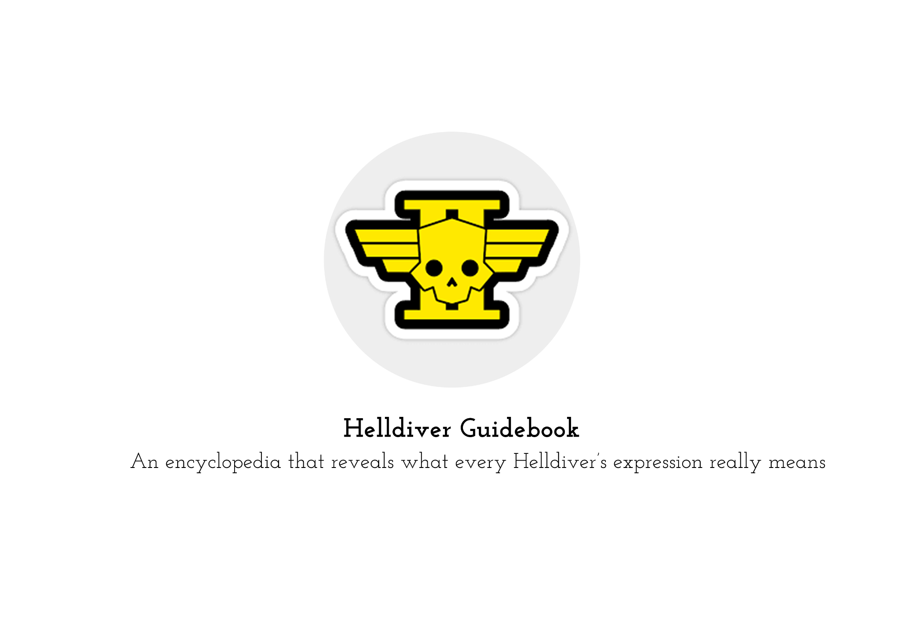
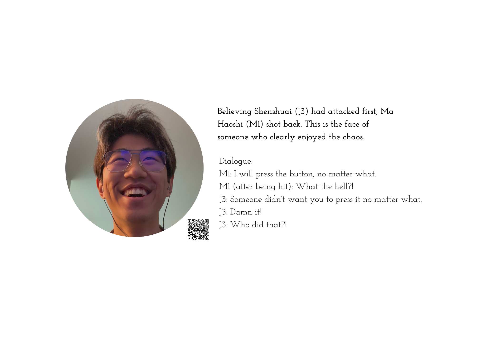
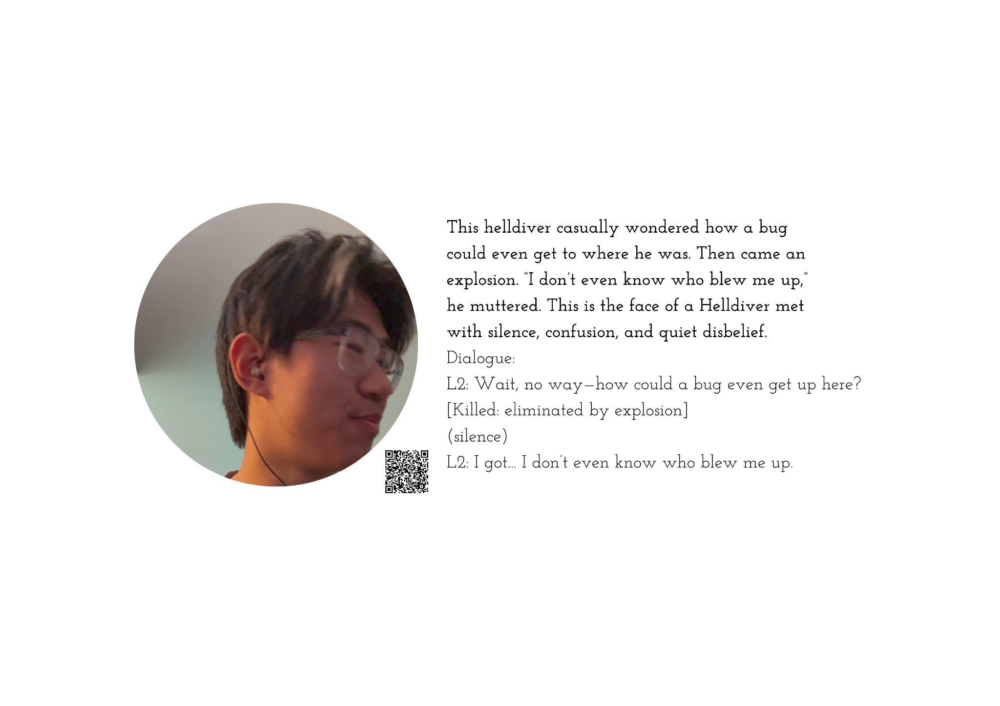
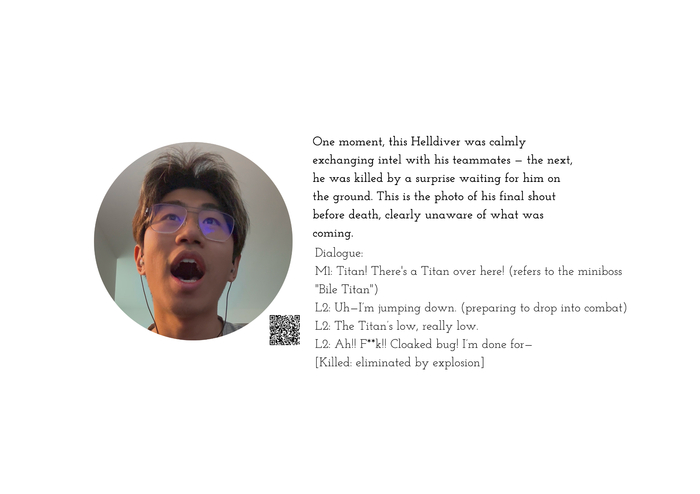

Helldiver Guidebook
Spring 2025 · Multimedia guidebook

Helldiver Guidebook is a playful archive of playing Helldivers with friends. Each page pairs a facial expression with the story behind it and a QR code linking to the moment in-game. Together, the entries collect the mistakes, teasing, and laughter that become part of our shared memory.
Selected pages. Select an image to view it full size.


